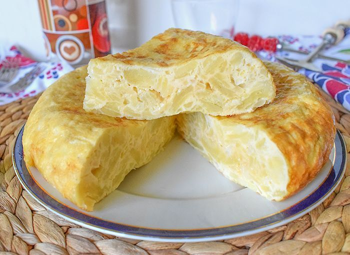

Ingredientes:
- 10 huevos tamaño L.
- 1 kg de patatas.
- sal.
- aceite
Preparacion:
- Elige bien el tipo de patatas que vas a utilizar. La variedad Monalisa es perfecta pero también puedes optar por otras variedades, procurando que sean patatas nuevas.
- Una vez que tenemos las patatas las pelamos, lavamos y secamos bien. Ahora hay que trocearlas, en rodajas finas e intentando que queden todas de un grosor similar.
- Un punto muy importante para que nos quede una buena tortilla, es cómo cocinamos las patatas. Después de salarlas, hay que ponerlas en una sartén amplia con abundante aceite caliente, pero hay que bajar enseguida el fuego y cocinarlas a temperatura suave, para que se cuezan más que freírse. Mientras las dejamos al fuego cocinándose, podemos ir preparando los huevos.
- Un truco para saber cuándo las patatas están en su punto es meter entre ellas una espumadera: si las patatas se parten sin ofrecer resistencia, es el momento de sacarlas. Lo haremos utilizando la espumadera e inclinando la sartén, procurando que nos queden muy bien escurridas.
- Para que la tortilla de patatas nos quede jugosa vamos a utilizar una proporción de, aproximadamente, 1 huevo por cada 100 g de patatas, es decir, en nuestro caso utilizaremos 10 huevos.
- Los iremos cascando aparte, uno a uno, para comprobar que están bien, y, una vez que los tengamos todos en un bol, batimos los huevos y salamos ligeramente.
- Juntamos las patatas con los huevos batidos y mezclamos un poco.
- Por otra parte, ponemos al fuego una sartén antiadherente con una pizca de aceite. Utilizaremos una sartén que podamos manejar bien, para que nos resulte fácil dar la vuelta a la tortilla de patatas.
- Cuando el aceite esté caliente, pasamos la mezcla de huevos y patatas a la sartén y dejamos que se cocine hasta que los bordes estén cuajados y un poco dorados y se separen fácilmente de la sartén.
- Para darle la vuelta, nosotros utilizamos un plato un poquito más grande que la sartén: sujetándolo bien y de forma rápida, le damos la vuelta a la tortilla de patatas. Después la volvemos a poner al fuego y, a temperatura suave, dejamos que se termine de cuajar por el otro lado.
- Solo nos queda darle la vuelta de nuevo para comprobar si de este lado está también cuajada y tostada a nuestro gusto, ¡ya la tenemos lista!.